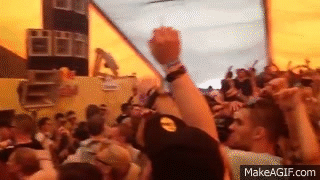
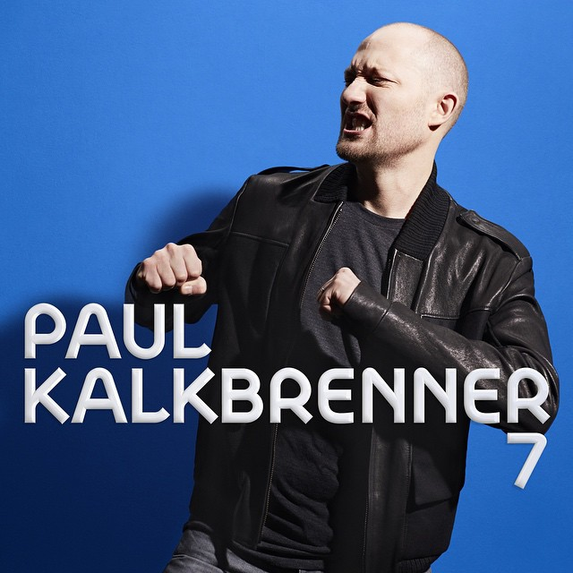
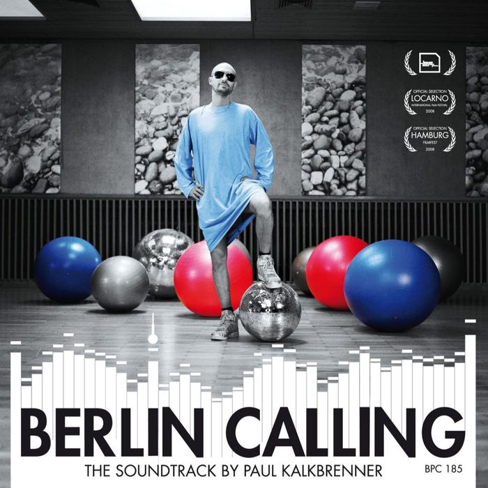
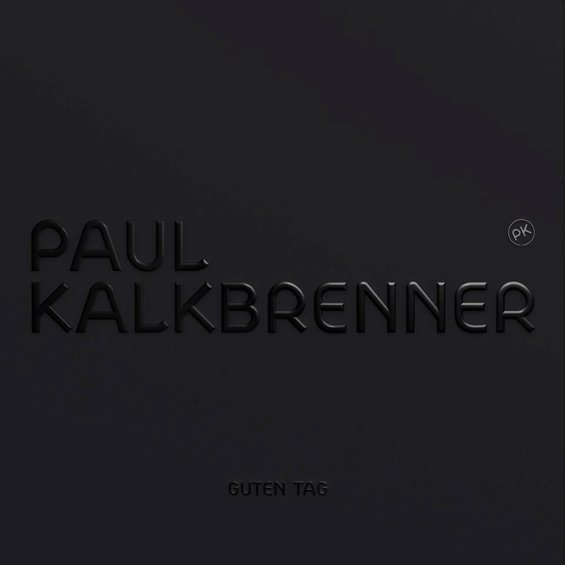
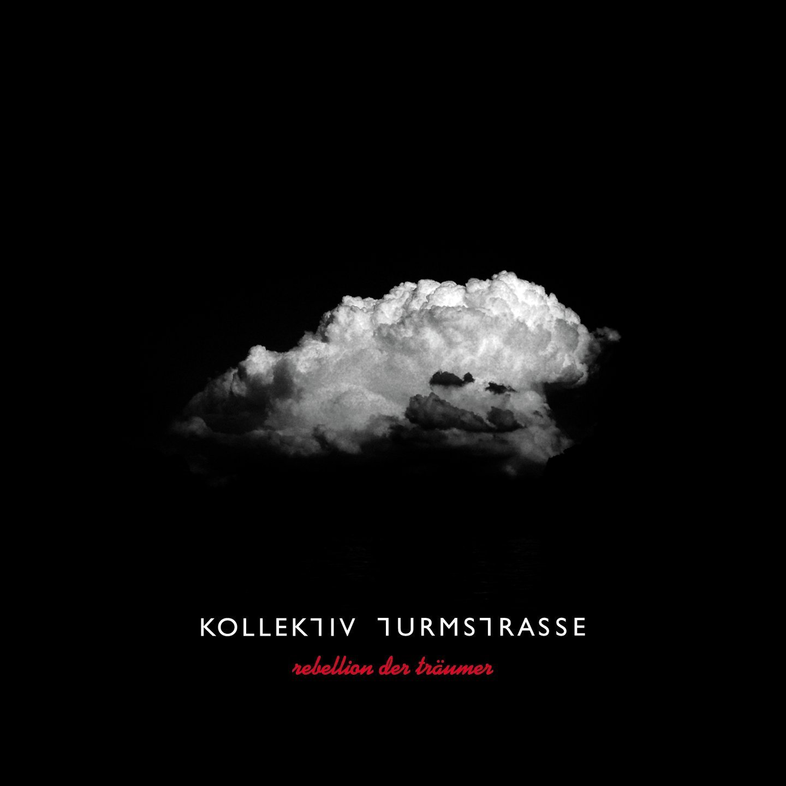
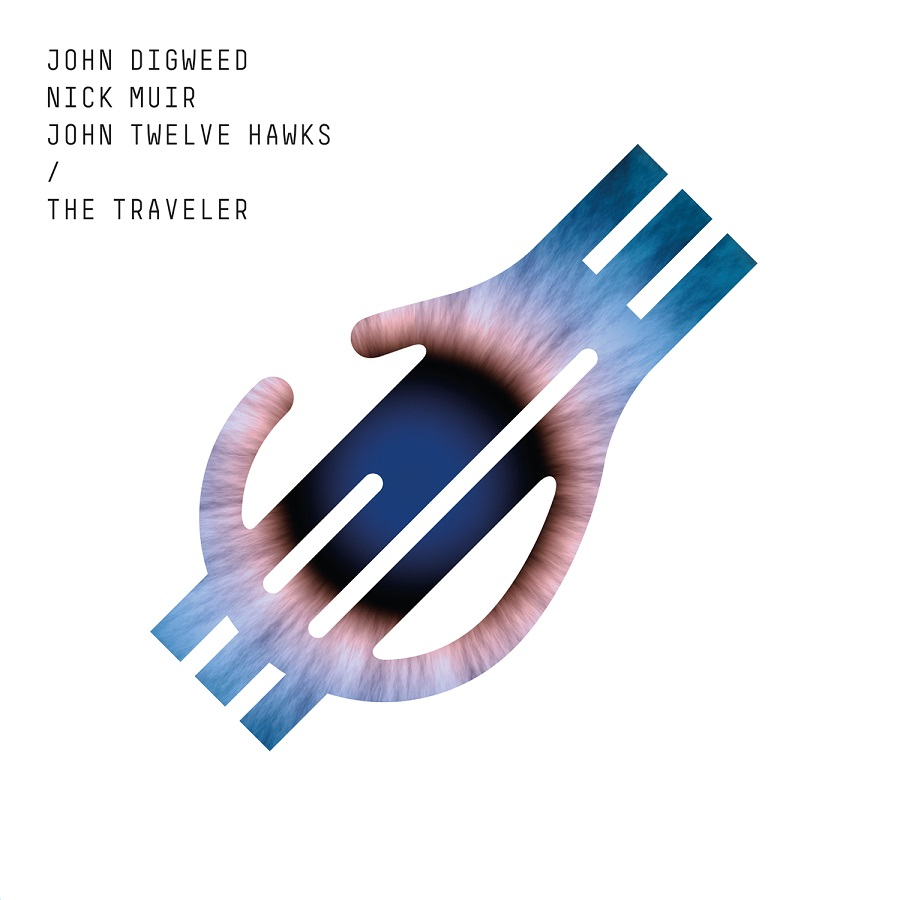

|
|
|
Understanding
Techno is a form of electronic dance music that emerged in Detroit, Michigan, in the United States during the mid-to-late 1980s. The first recorded use of the word techno in reference to a specific genre of music was in 1988. Many styles of techno now exist, but Detroit techno is seen as the foundation upon which a number of subgenres have been built. In Detroit techno resulted from the melding of African American music including Chicago house, funk, electro, and electric jazz with electronic music by artists such as Kraftwerk, Giorgio Moroder, and Yellow Magic Orchestra. Pioneering producer Juan Atkins cites Toffler's phrase "techno rebels" as inspiring him to use the word techno to describe the musical style he helped to create.This unique blend of influences aligns techno with the aesthetic referred to as afrofuturism. To producers such as Derrick May, the transference of spirit from the body to the machine is often a central preoccupation; essentially an expression of technological spirituality. The tempo tends to vary between approximately 120 to 150 beats per minute (bpm), depending on the style of techno. The creative use of music production technology, such as drum machines, synthesizers, and digital audio workstations, is viewed as an important aspect of the music's aesthetic. Many producers use retro electronic musical devices to create what they consider to be an authentic techno sound. Music journalists and fans of techno are generally selective in their use of the term; so a clear distinction can be made between sometimes related but often qualitatively different styles, such as tech house and trance. "Techno" is also commonly confused with generalized descriptors, such as EDM. |
Origins The initial blueprint for techno developed during the mid-1980s in Belleville, Michigan, a suburb of Detroit by Juan Atkins, Kevin Saunderson and Derrick May. By the close of the 1980s, the pioneers had recorded and released material under various guises: Atkins as Model 500, Flintstones, and Magic Juan; Fowlkes simply as Eddie "Flashin" Fowlkes; Saunderson as Reeses, Keynotes, and Kaos; with May as Mayday, R-Tyme, and Rhythim Is Rhythim. The early producers, enabled by the increasing affordability of sequencers and synthesizers, merged a European synthpop aesthetic with aspects of soul, funk, disco, and electro, pushing electronic dance music into uncharted terrain. s techno continued to transmute a number of Detroit producers began to question the trajectory the music was taking. One response came in the form of so-called minimal techno (a term producer Daniel Bell found difficult to accept, finding the term minimalism, in the artistic sense of the word, too "arty"). In the early 1990s a post-rave, DIY, free party scene had established itself in the UK.  |
|
Paul Kalkbrenner  |
Paul Kalkbrenner  |
Paul Kalkbrenner  |
|
Maceo Plex |
Kollektiv Turmstrasse  |
John Digweed  |